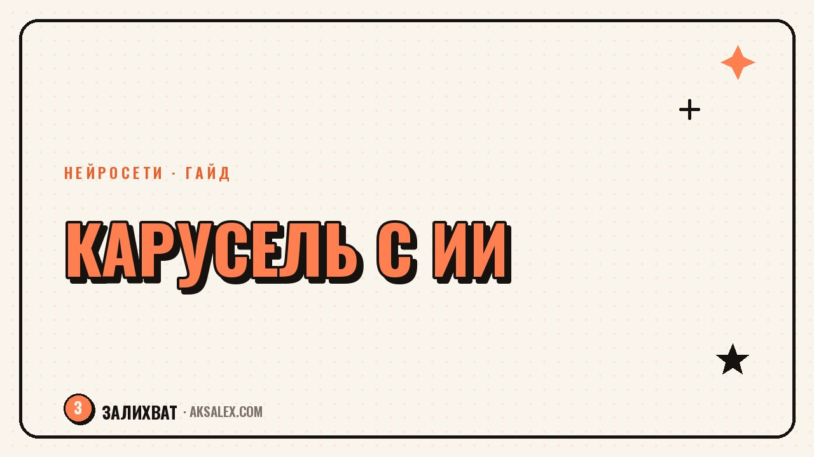

Как сделать карусель для соцсетей с ИИ

Карусель - один из самых сохраняемых форматов в соцсетях. Люди листают её как мини-инструкцию и возвращаются, потому что в одном посте лежит целая выжимка по теме. Нейросеть помогает собрать текст слайдов за минуты, а дальше остаётся оформить и выложить. Разберём, как устроена сильная карусель, как написать её с ИИ и на чём чаще всего спотыкаются новички.
Почему карусели так хорошо сохраняют
Карусель отвечает на запрос зрителя целиком: он видит структуру, листает по шагам и в конце получает готовый мини-гайд. Такой контент хочется сохранить, чтобы вернуться, а сохранения - один из сильнейших сигналов для алгоритма.
Ещё карусель дольше удерживает внимание: чтобы её долистать, нужно время, и алгоритм видит длинное взаимодействие с постом. Поэтому формат так любят в нишах, где есть чему научить, - от рецептов до маркетинга.
Карусель работает как мини-инструкция в кармане. Её сохраняют не за красоту, а за то, что к ней хочется вернуться.
Структура сильной карусели
Карусель держится на структуре не меньше, чем на тексте. Классическая схема проста, и по ней собирается почти любая тема.
Каркас из четырёх частей
- Обложка: цепляющий заголовок-обещание, ради которого начинают листать.
- Проблема: короткий слайд о боли, которую решаем.
- Тело: 3-6 слайдов с шагами, ошибками или пунктами - по одной мысли на слайд.
- Финал: вывод и мягкий призыв сохранить или обсудить в комментариях.
Ключевое правило - одна мысль на слайд. Не пытайся вместить абзац: слайд читают за секунды. Короткий заголовок, одно-два предложения пояснения - и дальше. Перегруженный текстом слайд листать перестают.
Как написать текст карусели с ИИ
Нейросеть отлично раскладывает тему на слайды. Дай ей тему, аудиторию и попроси разложить по структуре обложка-проблема-шаги-финал, коротко и по одной мысли на слайд. За минуту получишь готовый каркас текста.
Ты - редактор контента для соцсетей. Тема карусели: [тема]. Аудитория: [кто, что болит]. Сделай карусель из 7 слайдов: цепляющая обложка, слайд с проблемой, 4 слайда с шагами по одной мысли, финал с выводом и призывом сохранить. Коротко и разговорно.
Дальше дорабатывай: попроси сократить длинные слайды, усилить обложку, добавить конкретики. Текст от нейросети - это черновик, который ты оживляешь своим голосом и примерами из своей практики.
Типы каруселей под задачу
Формат один, но задачи разные. Выбирай тип под то, что хочешь получить от поста.
| Тип карусели | Задача | Пример темы |
|---|---|---|
| Пошаговая инструкция | Научить, собрать сохранения | «Как собрать рилз за 5 шагов» |
| Список ошибок | Показать экспертность | «5 ошибок новичков в блоге» |
| Подборка | Дать пользу пачкой | «7 приложений для монтажа» |
| История с выводом | Вовлечь эмоцией | «Как я вырастила блог с нуля» |
| До и после | Продать результат | «Профиль до и после переупаковки» |
Пошаговые инструкции и списки ошибок сохраняют лучше всего - в них видна конкретная польза. Истории и до-после работают на вовлечение и доверие. Чередуй типы, чтобы блог не был однообразным.
Оформление и частые ошибки
Оформление должно помогать читать, а не украшать ради украшения. Держи единый стиль во всех слайдах: один шрифт, одна палитра, крупный читаемый текст. Обложку делай самой яркой - от неё зависит, начнут ли листать вообще.
- Перегрузила слайд текстом - его не дочитывают и не листают дальше.
- Слабая обложка - карусель не открывают, каким бы полезным ни было внутри.
- Разный стиль слайдов - выглядит неаккуратно и снижает доверие.
- Нет финального слайда с призывом - теряешь сохранения и комментарии.
- Мелкий шрифт - половина листает с телефона и не может прочитать.
Оформление удобно делать по одному шаблону: собери его один раз и меняй только текст. Так каждая новая карусель выходит за минуты и держит узнаваемый вид блога.
Частые вопросы
Сколько слайдов должно быть в карусели?
Комфортно 6-9 слайдов: обложка, проблема, 3-6 слайдов тела и финал. Меньше - тема раскрыта поверхностно, больше - карусель редко долистывают до конца.
Можно ли писать текст карусели нейросетью?
Да, нейросеть хорошо раскладывает тему по слайдам. Но её текст - черновик: сократи длинные слайды, усиль обложку и добавь свои примеры, чтобы карусель звучала живо.
Почему мою карусель не листают дальше обложки?
Чаще всего дело в слабой обложке или перегруженных текстом слайдах. Сделай заголовок обложки цепким обещанием, а на слайдах оставляй по одной мысли крупным читаемым шрифтом.
Какой тип карусели собирает больше сохранений?
Пошаговые инструкции и списки ошибок - в них видна конкретная польза, к которой хочется вернуться. Истории и формат до-после лучше работают на вовлечение и доверие.
Нужен ли дизайнер для оформления карусели?
Нет. Собери один шаблон с единым шрифтом и палитрой и меняй только текст. Главное - читаемость и единый стиль слайдов, а не сложный дизайн.
а не вручную